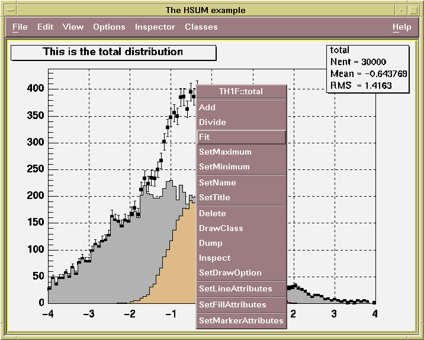
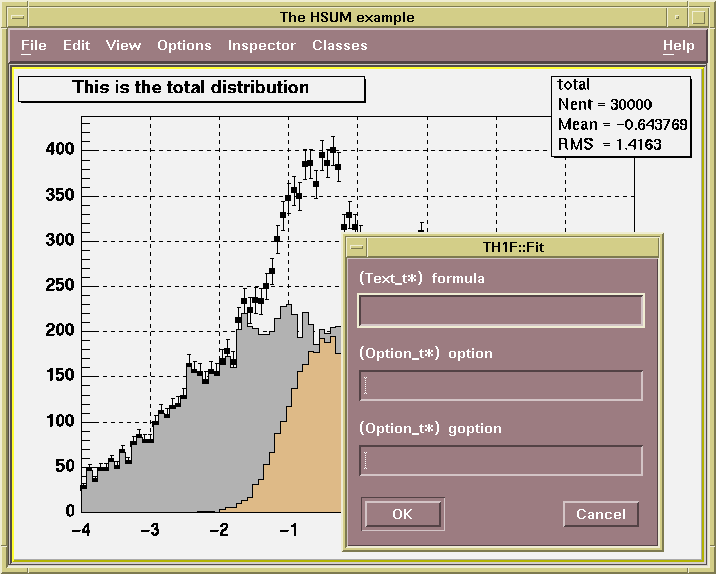

class TContextMenu: public TNamed
TContextMenu This class provides an interface to context sensitive popup menus. These menus pop up when the user hits the right mouse button, and are destroyed when the menu pops downs. Context Menus are automatically generated by ROOT using the following convention: if the string // *MENU* is found in the comment field of a member function. This function will be added to the list of items in the menu. The picture below shows a canvas with a pop-up menu.
The picture below shows a canvas with a pop-up menu and a dialog box.
Function Members (Methods)
public:
| TContextMenu(const char* name, const char* title = "Context sensitive popup menu") | |
| virtual | ~TContextMenu() |
| void | TObject::AbstractMethod(const char* method) const |
| virtual void | Action(TClassMenuItem* classmenuitem) |
| void | Action(TMethod* method) |
| void | Action(TToggle* toggle) |
| virtual void | Action(TObject* object, TMethod* method) |
| virtual void | Action(TObject* object, TToggle* toggle) |
| virtual void | TObject::AppendPad(Option_t* option = "") |
| virtual void | TObject::Browse(TBrowser* b) |
| static TClass* | Class() |
| virtual const char* | TObject::ClassName() const |
| virtual void | TNamed::Clear(Option_t* option = "") |
| virtual TObject* | TNamed::Clone(const char* newname = "") const |
| virtual Int_t | TNamed::Compare(const TObject* obj) const |
| virtual void | TNamed::Copy(TObject& named) const |
| virtual const char* | CreateArgumentTitle(TMethodArg* argument) |
| virtual const char* | CreateDialogTitle(TObject* object, TFunction* method) |
| virtual const char* | CreatePopupTitle(TObject* object) |
| virtual void | TObject::Delete(Option_t* option = "")MENU |
| virtual Int_t | TObject::DistancetoPrimitive(Int_t px, Int_t py) |
| virtual void | TObject::Draw(Option_t* option = "") |
| virtual void | TObject::DrawClass() constMENU |
| virtual TObject* | TObject::DrawClone(Option_t* option = "") constMENU |
| virtual void | TObject::Dump() constMENU |
| virtual void | TObject::Error(const char* method, const char* msgfmt) const |
| void | Execute(const char* params) |
| void | Execute(TObjArray* params) |
| virtual void | Execute(const char* method, const char* params, Int_t* error = 0) |
| virtual void | Execute(TMethod* method, TObjArray* params, Int_t* error = 0) |
| virtual void | Execute(TObject* object, TFunction* method, const char* params) |
| virtual void | Execute(TObject* object, TFunction* method, TObjArray* params) |
| virtual void | TObject::ExecuteEvent(Int_t event, Int_t px, Int_t py) |
| virtual void | TObject::Fatal(const char* method, const char* msgfmt) const |
| virtual void | TNamed::FillBuffer(char*& buffer) |
| virtual TObject* | TObject::FindObject(const char* name) const |
| virtual TObject* | TObject::FindObject(const TObject* obj) const |
| virtual TBrowser* | GetBrowser() |
| virtual TObject* | GetCalledObject() |
| virtual TContextMenuImp* | GetContextMenuImp() |
| virtual Option_t* | TObject::GetDrawOption() const |
| static Long_t | TObject::GetDtorOnly() |
| virtual const char* | TObject::GetIconName() const |
| virtual const char* | TNamed::GetName() const |
| virtual char* | TObject::GetObjectInfo(Int_t px, Int_t py) const |
| static Bool_t | TObject::GetObjectStat() |
| virtual Option_t* | TObject::GetOption() const |
| virtual TVirtualPad* | GetSelectedCanvas() |
| virtual TClassMenuItem* | GetSelectedMenuItem() |
| virtual TFunction* | GetSelectedMethod() |
| virtual TObject* | GetSelectedObject() |
| virtual TVirtualPad* | GetSelectedPad() |
| virtual const char* | TNamed::GetTitle() const |
| virtual UInt_t | TObject::GetUniqueID() const |
| virtual Bool_t | TObject::HandleTimer(TTimer* timer) |
| virtual ULong_t | TNamed::Hash() const |
| virtual void | TObject::Info(const char* method, const char* msgfmt) const |
| virtual Bool_t | TObject::InheritsFrom(const char* classname) const |
| virtual Bool_t | TObject::InheritsFrom(const TClass* cl) const |
| virtual void | TObject::Inspect() constMENU |
| void | TObject::InvertBit(UInt_t f) |
| virtual TClass* | IsA() const |
| virtual Bool_t | TObject::IsEqual(const TObject* obj) const |
| virtual Bool_t | TObject::IsFolder() const |
| Bool_t | TObject::IsOnHeap() const |
| virtual Bool_t | TNamed::IsSortable() const |
| Bool_t | TObject::IsZombie() const |
| virtual void | TNamed::ls(Option_t* option = "") const |
| void | TObject::MayNotUse(const char* method) const |
| virtual Bool_t | TObject::Notify() |
| void | TObject::Obsolete(const char* method, const char* asOfVers, const char* removedFromVers) const |
| static void | TObject::operator delete(void* ptr) |
| static void | TObject::operator delete(void* ptr, void* vp) |
| static void | TObject::operator delete[](void* ptr) |
| static void | TObject::operator delete[](void* ptr, void* vp) |
| void* | TObject::operator new(size_t sz) |
| void* | TObject::operator new(size_t sz, void* vp) |
| void* | TObject::operator new[](size_t sz) |
| void* | TObject::operator new[](size_t sz, void* vp) |
| virtual void | TObject::Paint(Option_t* option = "") |
| virtual void | TObject::Pop() |
| virtual void | Popup(Int_t x, Int_t y, TObject* obj, TBrowser* b) |
| virtual void | Popup(Int_t x, Int_t y, TObject* obj, TVirtualPad* c = 0, TVirtualPad* p = 0) |
| virtual void | TNamed::Print(Option_t* option = "") const |
| virtual Int_t | TObject::Read(const char* name) |
| virtual void | TObject::RecursiveRemove(TObject* obj) |
| void | TObject::ResetBit(UInt_t f) |
| virtual void | TObject::SaveAs(const char* filename = "", Option_t* option = "") constMENU |
| virtual void | TObject::SavePrimitive(ostream& out, Option_t* option = "") |
| void | TObject::SetBit(UInt_t f) |
| void | TObject::SetBit(UInt_t f, Bool_t set) |
| virtual void | SetBrowser(TBrowser* b) |
| virtual void | SetCalledObject(TObject* o) |
| virtual void | SetCanvas(TVirtualPad* c) |
| virtual void | TObject::SetDrawOption(Option_t* option = "")MENU |
| static void | TObject::SetDtorOnly(void* obj) |
| virtual void | SetMethod(TFunction* m) |
| virtual void | TNamed::SetName(const char* name)MENU |
| virtual void | SetNameTitle(const char* name, const char* title) |
| virtual void | SetObject(TObject* o) |
| static void | TObject::SetObjectStat(Bool_t stat) |
| virtual void | SetPad(TVirtualPad* p) |
| virtual void | SetSelectedMenuItem(TClassMenuItem* mi) |
| virtual void | TNamed::SetTitle(const char* title = "")MENU |
| virtual void | TObject::SetUniqueID(UInt_t uid) |
| virtual void | ShowMembers(TMemberInspector& insp) |
| virtual Int_t | TNamed::Sizeof() const |
| virtual void | Streamer(TBuffer& b) |
| void | StreamerNVirtual(TBuffer& b) |
| virtual void | TObject::SysError(const char* method, const char* msgfmt) const |
| Bool_t | TObject::TestBit(UInt_t f) const |
| Int_t | TObject::TestBits(UInt_t f) const |
| virtual void | TObject::UseCurrentStyle() |
| virtual void | TObject::Warning(const char* method, const char* msgfmt) const |
| virtual Int_t | TObject::Write(const char* name = 0, Int_t option = 0, Int_t bufsize = 0) |
| virtual Int_t | TObject::Write(const char* name = 0, Int_t option = 0, Int_t bufsize = 0) const |
protected:
| virtual void | DisplayPopUp(Int_t x, Int_t y) |
| virtual void | TObject::DoError(int level, const char* location, const char* fmt, va_list va) const |
| void | TObject::MakeZombie() |
private:
| TContextMenu() | |
| TContextMenu(const TContextMenu&) | |
| TContextMenu& | operator=(const TContextMenu&) |
Data Members
public:
| enum TObject::EStatusBits { | kCanDelete | |
| kMustCleanup | ||
| kObjInCanvas | ||
| kIsReferenced | ||
| kHasUUID | ||
| kCannotPick | ||
| kNoContextMenu | ||
| kInvalidObject | ||
| }; | ||
| enum TObject::[unnamed] { | kIsOnHeap | |
| kNotDeleted | ||
| kZombie | ||
| kBitMask | ||
| kSingleKey | ||
| kOverwrite | ||
| kWriteDelete | ||
| }; |
protected:
| TBrowser* | fBrowser | selected browser (if exist) |
| TObject* | fCalledObject | object to call |
| TContextMenuImp* | fContextMenuImp | !Context menu system specific implementation |
| TString | TNamed::fName | object identifier |
| TVirtualPad* | fSelectedCanvas | selected canvas (if exist) |
| TClassMenuItem* | fSelectedMenuItem | selected class menu item |
| TFunction* | fSelectedMethod | selected method |
| TObject* | fSelectedObject | selected object |
| TVirtualPad* | fSelectedPad | selected pad (if exist) |
| TString | TNamed::fTitle | object title |
Class Charts
{kind=link}
{kind=link}
{kind=link}

Function documentation
TContextMenu(const char* name, const char* title = "Context sensitive popup menu")
Create a context menu.
void Action(TObject* object, TMethod* method)
Action to be performed when this menu item is selected. If the selected method requires arguments we popup an automatically generated dialog, otherwise the method is directly executed.
void Action(TClassMenuItem* classmenuitem)
Action to be performed when this menu item is selected. If the selected method requires arguments we popup an automatically generated dialog, otherwise the method is directly executed.
void Action(TObject* object, TToggle* toggle)
Action to be performed when this toggle menu item is selected.
const char * CreateArgumentTitle(TMethodArg* argument)
Create string describing argument (for use in dialog box).
const char * CreateDialogTitle(TObject* object, TFunction* method)
Create title for dialog box retrieving argument values.
void Execute(TObject* object, TFunction* method, const char* params)
Execute method with specified arguments for specified object.
void Execute(TObject* object, TFunction* method, TObjArray* params)
Execute method with specified arguments for specified object.
void Popup(Int_t x, Int_t y, TObject* obj, TVirtualPad* c = 0, TVirtualPad* p = 0)
Popup context menu at given location in canvas c and pad p for selected object.
void Popup(Int_t x, Int_t y, TObject* obj, TBrowser* b)
Popup context menu at given location in browser b for selected object.
TContextMenu(const TContextMenu& )
TContextMenu& operator=(const TContextMenu& )